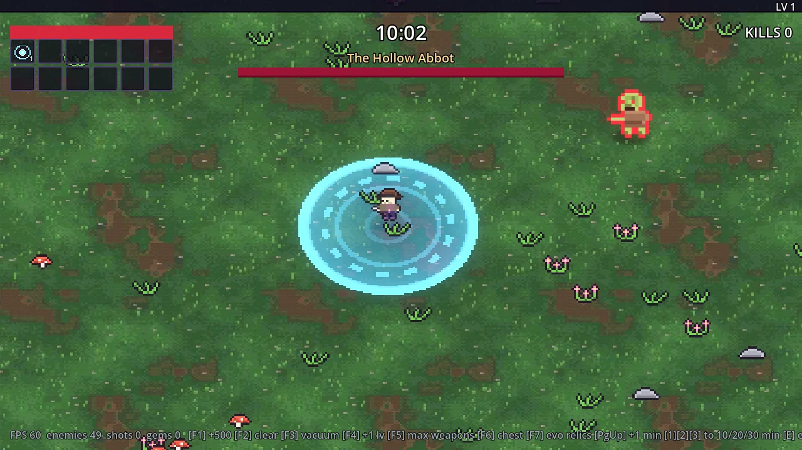
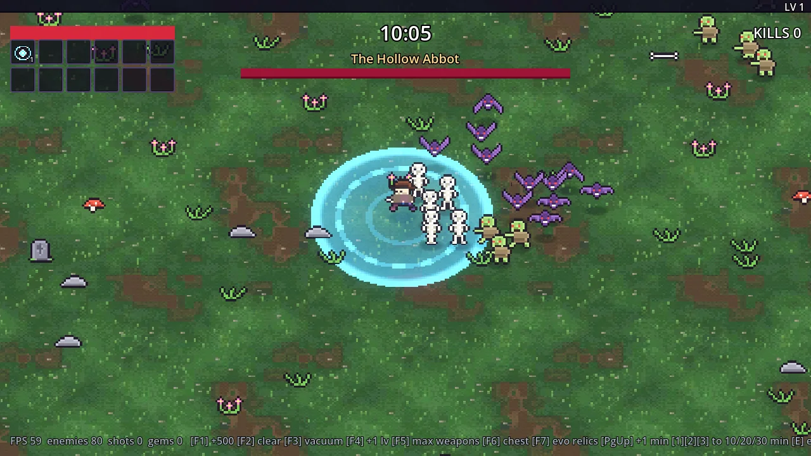
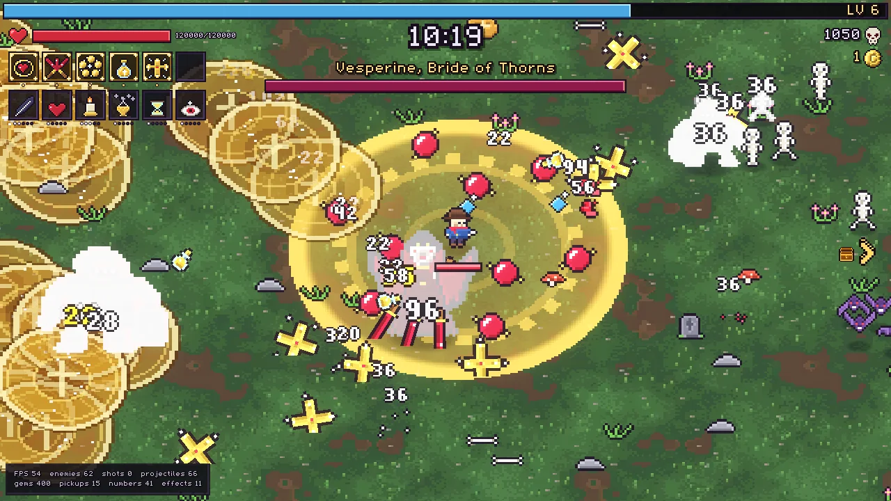

Perilaku Musuh, Wave dan Boss
Gerombolan yang hanya mengejar cepat membosankan. Fase 5 memberi musuh perilaku berbeda, menulis seluruh malam 30 menit sebagai satu file data, dan menambah elite serta boss, tanpa satu node pun per musuh.


Perilaku sebagai data per slot
Pendekatan berorientasi objek akan membuat subclass Bat, Acolyte, dst. Di sini perilaku hanyalah satu angka per slot (behavior[i]) dan loop tick bercabang di atasnya.
7## How EnemySwarm.tick moves the enemy. Stored as int in .tres: append only.
8enum Behavior {
9 CHASE, ## straight at the player
10 WEAVE, ## chase with a sideways sine wobble (bats)
11 RANGED, ## hold `preferred_range`, strafe, fire enemy shots
12 DRIFT, ## fixed direction set at spawn, despawns after its life (rings, lines)
13 SCRIPTED, ## velocity written from outside each frame (BossBrain)
14 STATIC, ## never moves, never pushed (breakable props, see BreakableData)
15}254func tick(dt: float, target: Vector2, shots: EnemyShotField) -> void:
255 var decay := exp(-knock_decay * dt)
256 var far2 := relocate_distance * relocate_distance
257 var flash_drop := dt * 8.0
258 for i in count:
259 var p := pos[i]
260 var d := target - p
261 var l2 := d.length_squared()
262 var b := behavior[i]
263 var v := Vector2.ZERO
264 if b <= RANGED: # CHASE, WEAVE, RANGED: steer at the player
265 if l2 > far2:
266 # Left behind: wrap around to the side the player is heading to.
267 pos[i] = target + d.normalized() * relocate_radius
268 continue
269 if l2 > 0.0001:
270 var inv := 1.0 / sqrt(l2)
271 v = d * (speed[i] * inv)
272 if b == WEAVE:
273 var t := type_idx[i]
274 var w := timer[i] + dt
275 timer[i] = w
276 v += Vector2(-v.y, v.x) * (_t_weave_amt[t] * sin(w * _t_weave_freq[t]))
277 elif b == RANGED:
278 v = _ranged(i, dt, p, d, l2 * inv, v, shots)
279 if d.x > 0.05:
280 facing[i] = 1.0
281 elif d.x < -0.05:
282 facing[i] = -1.0
283 else: # DRIFT, SCRIPTED: move along `dir` (STATIC: dir stays zero)
284 if b == DRIFT:
285 v = dir[i] * speed[i]
286 timer[i] -= dt
287 if timer[i] <= 0.0 and hp[i] > 0.0:
288 hp[i] = 0.0
289 flags[i] |= SILENT
290 _dead.append(i)
291 else:
292 v = dir[i]
293 if v.x > 0.05:
294 facing[i] = 1.0
295 elif v.x < -0.05:
296 facing[i] = -1.0
297 var k := knock[i]
298 pos[i] = p + (v + k) * dt
299 knock[i] = k * decay
300 if flash[i] > 0.0:
301 flash[i] = maxf(0.0, flash[i] - flash_drop)
302 _grid.build(pos, count)
303 _separate()- b <= RANGEDUrutan enum dimanfaatkan: CHASE=0, WEAVE=1, RANGED=2 semuanya "kejar pemain dan boleh direlokasi". Itu sebabnya komentar di enum berkata append only.
- WEAVE
Vector2(-v.y, v.x)adalahvdiputar 90°. Ditambah dengan amplitudo × sin(waktu × frekuensi), musuh berkelok di kiri-kanan jalurnya. - _t_*Parameter perilaku per tipe (bukan per slot) disimpan di array
_t_weave_amt,_t_range, … diisi saat tipe pertama kali di-spawn. Loop panas tidak pernah menyentuh Resource. - DRIFTBergerak lurus menurut
dir, dan saattimerhabis menghapus diri dengan flagSILENT:flush_deadtidak memancarkanenemy_died, jadi tidak ada gem atau kill.
306## Keep `preferred_range` (approach / back off / strafe) and fire when the
307## cooldown is up and the player is within reach. `chase_v` = full-speed
308## velocity toward the player, `dist` = distance to it.
309func _ranged(i: int, dt: float, p: Vector2, d: Vector2, dist: float, chase_v: Vector2,
310 shots: EnemyShotField) -> Vector2:
311 var t := type_idx[i]
312 var want := _t_range[t]
313 var v: Vector2
314 if dist > want + 0.75:
315 v = chase_v
316 elif dist < want - 1.5:
317 v = chase_v * -0.6
318 else:
319 # Strafe around the player; direction per enemy from uid parity.
320 v = Vector2(-chase_v.y, chase_v.x) * (0.35 if uid[i] & 1 else -0.35)
321 var cd := timer[i] - dt
322 if cd <= 0.0:
323 if dist < want + 4.0:
324 var data := types[t]
325 shots.fire(p, d * (data.shot_speed / dist), data.shot_damage, data.shot_row,
326 data.shot_size, (want + 6.0) / data.shot_speed)
327 flash[i] = 0.6
328 cd += _t_interval[t]
329 timer[i] = cd
330 return vTembakan musuh pergi ke EnemyShotField: packed array + MultiMesh lagi, tapi lebih sederhana dari ProjectileField karena hanya perlu mengecek satu lingkaran, yaitu pemain. Tidak perlu spatial hash, tidak perlu hit memory.
Separasi berbobot radius
Fase 5 menambah musuh besar (Gravebound Brute, boss). Separasi Fase 1 mendorong kedua musuh sama kuat, sehingga brute tergeser oleh kelelawar. Versi baru membobot dorongan dengan porsi radius pihak lain:
368 # Weighted by the other's share of the overlap: big enemies
369 # shove small ones aside and barely move (equal sizes: 1).
370 var dist := sqrt(d2)
371 push += dd * ((r - dist) / dist * 2.0 * radius[j] / r)2·r_j / (r_i + r_j) = 1 kalau ukurannya sama, mendekati 0 untuk musuh besar yang didorong musuh kecil, mendekati 2 untuk musuh kecil yang didorong musuh besar. Musuh besar menyibak gerombolan seperti seharusnya.
WaveTable: malam 30 menit sebagai satu file
Director Fase 1 menaikkan laju terus-menerus. Fase 5 menggantinya dengan data yang bisa dibaca desainer:
WaveEntry= aliran spawn kontinu dalam rentang menit[start, end): daftar musuh berbobot, laju yang naik linear darirate_startkerate_end, batasmax_alive, ukuran cluster. Entry boleh tumpang tindih; masing-masing punya akumulator sendiri.WaveEvent= sekali jalan di menit tertentu: RING, LINE, BURST, ELITE, BOSS.WaveTable= keduanya + pertumbuhan HP per menit + final minute + reaper.
1class_name WaveEntry
2extends Resource
3## One stream of continuous spawns, active from `start_minute` to `end_minute`.
4## Several entries may overlap; each keeps its own spawn accumulator.
5
6@export var start_minute := 0.0
7@export var end_minute := 1.0
8@export var enemies: Array[EnemyData] = []
9## Relative pick weight per enemy (same order). Empty = equal weights.
10@export var weights: PackedFloat32Array = []
11## Spawns per second at start_minute, ramping linearly to `rate_end`.
12@export var rate_start := 2.0
13@export var rate_end := 4.0
14## This entry stops spawning while EnemySwarm.count is at or above this.
15@export var max_alive := 300
16## Multiplies WaveTable's time-based HP growth.
17@export var hp_mult := 1.0
18@export var cluster_min := 3
19@export var cluster_max := 6
20
21
22func is_active(minute: float) -> bool:
23 return minute >= start_minute and minute < end_minute
24
25
26func rate_at(minute: float) -> float:
27 var t := inverse_lerp(start_minute, end_minute, minute)
28 return lerpf(rate_start, rate_end, clampf(t, 0.0, 1.0))
29
30
31func pick() -> EnemyData:
32 if weights.size() != enemies.size():
33 return enemies.pick_random()
34 var total := 0.0
35 for w in weights:
36 total += w
37 var r := randf() * total
38 for k in enemies.size():
39 r -= weights[k]
40 if r <= 0.0:
41 return enemies[k]
42 return enemies[-1] 1class_name WaveTable
2extends Resource
3## The whole run's spawn schedule (data/waves/*.tres), read by SpawnDirector.
4## `entries` = continuous streams, `events` = one-shot spawns sorted by
5## minute, `final_minute` = when the night ends and `reaper` comes.
6
7@export var entries: Array[WaveEntry] = []
8@export var events: Array[WaveEvent] = []
9## Every enemy's HP is multiplied by (1 + hp_growth_per_minute * minute)
10## on top of the entry / event hp_mult.
11@export var hp_growth_per_minute := 0.12
12## Elite = this HP multiplier, size and XP on top of the base enemy.
13@export var elite_hp_mult := 25.0
14@export var elite_scale := 1.6
15@export var elite_xp_mult := 10.0
16@export var final_minute := 30.0
17## Spawned at final_minute (after every other enemy is removed), then again
18## every `reaper_interval` seconds.
19@export var reaper: EnemyData
20@export var reaper_interval := 60.0
21
22
23func hp_scale(minute: float) -> float:
24 return 1.0 + hp_growth_per_minute * minuteData demo di atas disalin dari data/waves/night.tres. Lihat bagaimana dua entry ghoul tumpang tindih di menit 5–6, brute masuk pelan-pelan dari menit 8, dan total laju naik dari 2 menjadi ~45 spawn per detik di akhir malam.
SpawnDirector membaca tabel
35func tick(dt: float, game: Game) -> void:
36 _minute = game.elapsed / 60.0
37 var i := 0
38 while i < bosses.size():
39 if bosses[i].tick(dt, game):
40 i += 1
41 else:
42 bosses.remove_at(i)
43
44 if final_phase:
45 _reaper_t -= dt
46 if _reaper_t <= 0.0:
47 _reaper_t += table.reaper_interval
48 _spawn_reaper(game)
49 return
50 if _minute >= table.final_minute:
51 _begin_final(game)
52 return
53
54 while _next_event < table.events.size() and table.events[_next_event].minute <= _minute:
55 _fire_event(table.events[_next_event], game)
56 _next_event += 1
57
58 var hp_base := hp_scale()
59 for k in table.entries.size():
60 var e := table.entries[k]
61 if not e.is_active(_minute) or e.enemies.is_empty():
62 continue
63 _acc[k] += e.rate_at(_minute) * dt
64 while _acc[k] >= 1.0:
65 if game.swarm.count >= e.max_alive:
66 _acc[k] = 0.0
67 break
68 var n := randi_range(e.cluster_min, e.cluster_max)
69 _acc[k] -= n
70 spawn_cluster(game, e.pick(), n, randf() * TAU, hp_base * e.hp_mult)Event diurutkan menurut menit dan dibaca dengan satu penunjuk _next_event: tidak perlu mencari di seluruh daftar tiap frame. skip_to() (debug PgUp, 1/2/3) memajukan jam dan melompati event yang terlewat, sehingga lompat ke 9:57 tidak menumpahkan sembilan menit event sekaligus.
107func _fire_event(ev: WaveEvent, game: Game) -> void:
108 var center := game.player.pos2
109 var hp_mult := hp_scale() * ev.hp_mult
110 match ev.kind:
111 WaveEvent.Kind.RING:
112 # Every member heads for the player's position at spawn time: the
113 # circle tightens, crosses in the middle, then the survivors expire.
114 var life := ev.enemy.drift_life
115 if life <= 0.0:
116 life = 2.0 * ev.radius / ev.enemy.move_speed
117 for k in ev.count:
118 var a := TAU * k / ev.count
119 var off := Vector2.from_angle(a) * ev.radius
120 game.swarm.spawn(ev.enemy, center + off, hp_mult, 0, -off / ev.radius, life)
121 WaveEvent.Kind.LINE:
122 # A column perpendicular to the heading, entering from off screen.
123 var heading := Vector2.from_angle(randf() * TAU)
124 var side := Vector2(-heading.y, heading.x)
125 var start := center - heading * ev.radius
126 var life := ev.enemy.drift_life
127 if life <= 0.0:
128 life = 2.0 * ev.radius / ev.enemy.move_speed
129 var spacing := 1.1
130 for k in ev.count:
131 var lateral := (k - (ev.count - 1) * 0.5) * spacing
132 var stagger := heading * randf_range(-0.4, 0.4)
133 game.swarm.spawn(ev.enemy, start + side * lateral + stagger, hp_mult, 0, heading, life)
134 WaveEvent.Kind.BURST:
135 var a := randf() * TAU
136 for k in ev.count:
137 var spread := a + randf_range(-0.35, 0.35)
138 var r := ev.radius + randf_range(0.0, 3.0)
139 game.swarm.spawn(ev.enemy, center + Vector2.from_angle(spread) * r, hp_mult)
140 WaveEvent.Kind.ELITE:
141 for k in ev.count:
142 var at := center + Vector2.from_angle(randf() * TAU) * spawn_radius
143 game.swarm.spawn(ev.enemy, at, hp_mult * table.elite_hp_mult, EnemySwarm.ELITE,
144 Vector2.ZERO, 0.0, table.elite_scale)
145 WaveEvent.Kind.BOSS:
146 spawn_boss(game, ev.enemy as BossData, hp_mult)RING menarik semua anggota ke posisi pemain saat spawn, bukan ke pemain yang bergerak. Lingkaran menyempit, bersilangan di tengah, lalu yang selamat lewat dan hilang. Pemain bisa keluar dari lingkaran sebelum menutup; itu yang membuat event terasa berbeda dari gerombolan biasa.
Elite: tint lewat INSTANCE_CUSTOM
Elite adalah musuh biasa dengan flag ELITE, skala 1,6, HP ×25, XP ×10, tahan knockback, dan selalu menjatuhkan peti. Visualnya tidak butuh sprite baru. Tanda INSTANCE_CUSTOM.y sudah dipakai untuk arah hadap (±1); besarnya sekarang juga membawa tint: y = facing × (1 + tint).
51void fragment() {
52 vec4 c = texture(sheet, v_uv);
53 vec3 col = c.rgb;
54 if (v_tint > 0.0) {
55 bool is_outline = distance(c.rgb, outline_color.rgb) < 0.004;
56 float pulse = 0.8 + 0.2 * sin(TIME * 7.0);
57 col = is_outline ? elite_color.rgb * elite_energy * pulse * v_tint
58 : mix(col, col * elite_body.rgb, 0.6 * v_tint);
59 }
60 ALBEDO = mix(col, flash_color.rgb, v_flash);
61 ALPHA = c.a;
62 ALPHA_SCISSOR_THRESHOLD = 0.5;
63}Piksel yang warnanya sama dengan OUTLINE generator sprite (Bab 0) diganti merah dengan energi > 1, sehingga glow WorldEnvironment membuatnya berpendar dan berdenyut. Badan sedikit diberi warna kemerahan. Satu float, efek visual yang langsung terbaca.
Boss: slot biasa + otak terpisah
Boss juga satu slot EnemySwarm. Semua senjata mengenainya lewat jalur yang sama, hit flash dan angka damage gratis. Bedanya: behavior = SCRIPTED, artinya swarm menggerakkannya menurut dir[i] sebagai kecepatan, dan yang menulis dir[i] adalah BossBrain, sebuah RefCounted milik SpawnDirector.
1class_name BossData
2extends EnemyData
3## A boss is an ordinary EnemySwarm slot (weapons hit it like any enemy) with
4## behavior SCRIPTED; a BossBrain owned by SpawnDirector moves it through
5## `pattern`: chase -> telegraph -> attack -> chase -> next attack...
6
7enum Attack { DASH, RADIAL, SUMMON }
8
9## Shown above the HUD health bar.
10@export var title := ""
11## Attack order, looped. Stored as int in .tres.
12@export var pattern: Array[Attack] = [Attack.DASH, Attack.RADIAL, Attack.SUMMON]
13## Seconds walking at the player between attacks.
14@export var chase_time := 2.5
15## Seconds standing still and flashing before each attack.
16@export var telegraph_time := 0.7
17
18@export_group("Dash")
19@export var dash_speed := 15.0
20@export var dash_time := 0.55
21
22@export_group("Radial")
23## Shots per ring (uses shot_row / shot_speed / shot_damage / shot_size).
24@export var radial_count := 16
25@export var radial_volleys := 3
26@export var radial_interval := 0.35
27
28@export_group("Summon")
29@export var summon: EnemyData
30@export var summon_count := 10
31@export var summon_radius := 3.034## Returns false once the boss is gone (killed or cleared).
35func tick(dt: float, game: Game) -> bool:
36 var swarm := game.swarm
37 var i := swarm.slot_of(uid)
38 if i < 0 or swarm.hp[i] <= 0.0:
39 hp = 0.0
40 return false
41 hp = swarm.hp[i]
42 var p := swarm.pos[i]
43 pos = p
44 var to_player := game.player.pos2 - p
45 _t -= dt
46 match state:
47 State.CHASE:
48 swarm.dir[i] = to_player.normalized() * data.move_speed
49 if _t <= 0.0:
50 state = State.TELEGRAPH
51 _t = data.telegraph_time
52 State.TELEGRAPH:
53 swarm.dir[i] = Vector2.ZERO
54 swarm.flash[i] = 0.5 + 0.5 * sin(_t * 30.0)
55 _dash_dir = to_player.normalized()
56 if _t <= 0.0:
57 _attack(i, game)
58 State.DASH:
59 swarm.dir[i] = _dash_dir * data.dash_speed
60 if _t <= 0.0:
61 _chase()
62 State.RADIAL:
63 swarm.dir[i] = Vector2.ZERO
64 if _t <= 0.0:
65 _fire_ring(p, game.enemy_shots, _volleys_left)
66 _volleys_left -= 1
67 _t = data.radial_interval
68 if _volleys_left <= 0:
69 _chase()
70 return true
71
72
73func _attack(i: int, game: Game) -> void:
74 var attack: BossData.Attack = data.pattern[_attack_index % data.pattern.size()]
75 _attack_index += 1
76 match attack:
77 BossData.Attack.DASH:
78 state = State.DASH
79 _t = data.dash_time
80 game.camera_rig.add_shake(0.25)
81 BossData.Attack.RADIAL:
82 state = State.RADIAL
83 _volleys_left = data.radial_volleys
84 _t = 0.0
85 BossData.Attack.SUMMON:
86 if data.summon:
87 var p := game.swarm.pos[i]
88 var hp_mult := game.director.hp_scale()
89 for k in data.summon_count:
90 var a := TAU * k / data.summon_count
91 game.swarm.spawn(data.summon, p + Vector2.from_angle(a) * data.summon_radius, hp_mult)
92 _chase()- slot_of(uid)Brain menyimpan uid, bukan indeks slot, dan mencari slotnya setiap tick. Slot boss bisa berpindah kapan pun musuh lain mati (swap-remove).
- state machineCHASE → TELEGRAPH (diam, berkedip lewat
flash[i], memberi pemain waktu bereaksi) → serangan berikutnya daripattern→ CHASE. Pola adalah data: Hollow Abbot dan Vesperine memakai kode yang sama dengan urutan dan angka berbeda. - latensiBrain di-tick di
director.tick, setelah swarm bergerak. Kecepatan yang ditulisnya dipakai swarm di frame berikutnya. Latensi 1 frame itu tidak terasa, dan urutan Game tetap sederhana.
HUD membaca director.active_boss() untuk menampilkan nama dan bar HP. Musuh besar (34 px) digambar oleh MultiMesh kedua (_large_mm, sheet enemies_large.png) karena satu MultiMesh hanya punya satu tekstur dengan satu ukuran sel.

Menit 30: Knellwraith
168func _begin_final(game: Game) -> void:
169 final_phase = true
170 bosses.clear()
171 game.swarm.clear()
172 game.enemy_shots.clear()
173 _reaper_t = table.reaper_interval
174 _spawn_reaper(game)
175
176
177func _spawn_reaper(game: Game) -> void:
178 if table.reaper == null:
179 return
180 var at := game.player.pos2 + Vector2.from_angle(randf() * TAU) * spawn_radius
181 game.swarm.spawn(table.reaper, at)Knellwraith punya HP 1e9 dan damage kontak 99999: tidak bisa dikalahkan, hanya dihindari. Kematian setelah menit 30 ditampilkan sebagai "THE NIGHT IS OVER", bukan "FALLEN" (Fase 7), dan dihitung sebagai malam yang berhasil dilewati (Fase 8).
- Menit 1: lingkaran 20 wisp menyempit. Menit 2: 40 kelelawar dari satu sisi. Menit 3: kolom tengkorak menyeberang.
- Tekan E: elite dengan outline merah berdenyut muncul; bunuh, ia menjatuhkan peti.
- Tekan 1 (lompat ke 9:57): tiga detik kemudian Hollow Abbot datang, layar bergetar, bar boss muncul. Perhatikan pola: kejar, diam berkedip, lalu dash/ring tembakan/panggil anak buah.
- Tekan 3 (29:57): semua musuh hilang, timer HUD merah, Knellwraith datang.
- Boss berhenti bergerak setelah musuh lain mati. Brain menyimpan indeks slot. Pakai uid +
slot_of(). - Event di menit target terlewat saat debug lompat.
skip_tomelompati event denganminute <target; itu sebabnya debug melompat ke target − 3 detik. - Menambah perilaku baru di tengah enum merusak semua .tres musuh dan logika
b <= RANGED. Tambahkan di akhir (seperti STATIC di Fase 6). - Spawn berhenti total. Semua entry aktif sudah mencapai
max_alive. Itu disengaja (batas performa), tapi cek angkanya kalau terasa sepi.
- Tambahkan event BURST 200 kelelawar di menit 0,5 di
night.treslewat Inspector. Mainkan 40 detik pertama. - Ubah
patternHollow Abbot menjadi [RADIAL, RADIAL, DASH] danradial_count24. - Tantangan: tambah perilaku
ORBITER(di akhir enum) yang mengelilingi pemain di radius 6 sambil mendekat pelan. Cukup satu cabang ditickdan satu nilai per tipe.